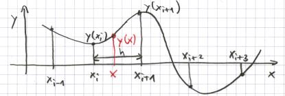
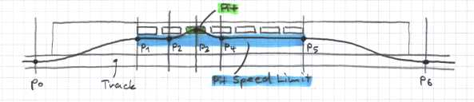

8.2 SplinesIntroductionIn the last section you have seen that we need to find somehow a path into our pit. I decided to show you an implementation which uses "cubic" splines to create the path. Cubic splines are interpolating polynomials between given base points, such that the function itself and the first derivative is smooth. We need a smooth path because our car can not follow a path with "cracks". First I will show you the implementation of the spline algorithm, after that we will prepare the base points. The Spline Implementation |
|  |
|
If you want to know how the following algorithm works, you can look it up here. In a nutshell, you query for a given parameter ("x") the value of the spline function ("y"). The algorithm searches first the interval in which "x" falls, then it applies the interpolation to compute y(x). Now let's have a look on the spline.h file (create it in the bt directory). /***************************************************************************
file : spline.h
created : Wed Mai 14 19:53:00 CET 2003
copyright : (C) 2003 by Bernhard Wymann
email : berniw@bluewin.ch
***************************************************************************/
/***************************************************************************
* *
* This program is free software; you can redistribute it and/or modify *
* it under the terms of the GNU General Public License as published by *
* the Free Software Foundation; either version 2 of the License, or *
* (at your option) any later version. *
* *
***************************************************************************/
#ifndef _SPLINE_H_
#define _SPLINE_H_
class SplinePoint {
public:
float x; /* x coordinate */
float y; /* y coordinate */
float s; /* slope */
};
The SplinePoint class holds the data for each base point of the spline. For the interpolation algorithm we need to define also the slope at (x,y). class Spline {
public:
Spline(int dim, SplinePoint *s);
float evaluate(float z);
private:
SplinePoint *s;
int dim;
};
#endif // _SPLINE_H_
The Spline class provides just two methods. The constructor to initialize the number of base points (dim) and a pointer to an array of SplinePoints. The second method finally computes the spline values. Here follows the implementation, put it into spline.cpp. /***************************************************************************
file : spline.cpp
created : Wed Mai 14 20:10:00 CET 2003
copyright : (C) 2003 by Bernhard Wymann
email : berniw@bluewin.ch
***************************************************************************/
/***************************************************************************
* *
* This program is free software; you can redistribute it and/or modify *
* it under the terms of the GNU General Public License as published by *
* the Free Software Foundation; either version 2 of the License, or *
* (at your option) any later version. *
* *
***************************************************************************/
#include "spline.h"
Spline::Spline(int dim, SplinePoint *s)
{
this->s = s;
this->dim = dim;
}
float Spline::evaluate(float z)
{
int i, a, b;
float t, a0, a1, a2, a3, h;
a = 0; b = dim-1;
First the algorithm searches for the interval in which the parameter z falls. do {
i = (a + b) / 2;
if (s[i].x <= z) a = i; else b = i;
} while ((a + 1) != b);
Now we know the interval and do the interpolation. For that we compute first the parameters of the polynomial, then we evaluate it. i = a; h = s[i+1].x - s[i].x; t = (z-s[i].x) / h;
a0 = s[i].y; a1 = s[i+1].y - a0; a2 = a1 - h*s[i].s;
a3 = h * s[i+1].s - a1; a3 -= a2;
return a0 + (a1 + (a2 + a3*t) * (t-1))*t;
}
Finally you need to add spline.cpp to the Makefile. Change SOURCES = ${ROBOT}.cpp driver.cpp opponent.cpp
to SOURCES = ${ROBOT}.cpp driver.cpp opponent.cpp spline.cpp
The Pit PathThe following picture shows the path to and out of the pit. Like you can see we need the base points p0 to p6 to be able to compute the path. Our x-axis is the middle line along the track, so the slope in the base points is zero (parallel to the track). |
|  |
|
We compute the base points of the spline in the constructor of a new class, put it into a new file and save it as pit.cpp. That we don't need to change the constructor all the time I will present you the final result. We will discuss all the new variables later in detail, at the moment we just focus on the base points. The header file will follow later. /***************************************************************************
file : pit.cpp
created : Thu Mai 15 2:43:00 CET 2003
copyright : (C) 2003 by Bernhard Wymann
email : berniw@bluewin.ch
***************************************************************************/
/***************************************************************************
* *
* This program is free software; you can redistribute it and/or modify *
* it under the terms of the GNU General Public License as published by *
* the Free Software Foundation; either version 2 of the License, or *
* (at your option) any later version. *
* *
***************************************************************************/
#include "pit.h"
const float Pit::SPEED_LIMIT_MARGIN = 0.5; /* [m/s] savety margin */
const int Pit::PIT_DAMMAGE = 5000; /* [-] */
The speed limit margin defines how close our speed limiter should go to the allowed speed. The pit damage defines the threshold when we decide to go into the pit to repair our car. Pit::Pit(tSituation *s, Driver *driver)
{
track = driver->getTrackPtr();
car = driver->getCarPtr();
mypit = driver->getCarPtr()->_pit;
pitinfo = &track->pits;
pitstop = inpitlane = false;
fuelchecked = false;
fuelperlap = 0.0;
lastpitfuel = 0.0;
lastfuel = car->priv.fuel;
if (mypit != NULL) {
Set up several variables for strategy and pit stops. Of interest is the mypit variable, if it is not null we have a pit (there are tracks without pits or more drivers in the race than pits available), and the pitinfo variable. In mypit you can find specific information about your own pit, pitinfo holds data about the pit lane. If we do not own a pit we cannot plan a path. speedlimit = pitinfo->speedLimit - SPEED_LIMIT_MARGIN;
speedlimitsqr = speedlimit*speedlimit;
First the speed limit and the square of it are computed. /* compute pit spline points along the track */
p[3].x = mypit->pos.seg->lgfromstart + mypit->pos.toStart;
The position of our pit along the track relative to the start is the position of the pit segment start plus the relative position of our pit in the pit segment. p[2].x = p[3].x - pitinfo->len; A reasonable point to go from the pit lane into our pit is the middle of the previous pit. If you experiment with this value you have to make sure that you do not collide with other cars in their pit. p[4].x = p[3].x + pitinfo->len; The same applies for the way back to the pit lane. p[0].x = pitinfo->pitEntry->lgfromstart; The entry point where we start leaving the track and heading to the pit lane. This value is on much tracks not reasonable, so you want to make it later adjustable in the xml file or compute it with a heuristic. p[1].x = pitinfo->pitStart->lgfromstart; The start of the pit lane, from here we have to respect the speed limit. p[5].x = p[3].x + (pitinfo->nMaxPits - car->index)*pitinfo->len; The end of the pit lane. It is computed this way, because on some tracks the end is not reported correct. p[6].x = pitinfo->pitExit->lgfromstart; And finally the point where we are back on the track. Now we have computed all "x" values of our spline base points. pitentry = p[0].x;
pitexit = p[6].x;
/* normalizing spline segments to >= 0.0 */
int i;
for (i = 0; i < NPOINTS; i++) {
p[i].s = 0.0;
p[i].x = toSplineCoord(p[i].x);
}
The above loop initializes all the slopes to zero and converts the "x" values into a range from zero to the distance of p[6] and p[0]. The conversion is necessary because the start line can be within the pit lane (the "x" value grows till the start line, then it drops to zero and grows again). To get proper interpolation we need a continuous "x". if (p[1].x > p[2].x) p[1].x = p[2].x;
if (p[4].x > p[5].x) p[5].x = p[4].x;
If we have the first or the last pit we need to adjust the ordering of the points. float sign = (pitinfo->side == TR_LFT) ? 1.0 : -1.0;
p[0].y = 0.0;
p[6].y = 0.0;
for (i = 1; i < NPOINTS - 1; i++) {
p[i].y = fabs(pitinfo->driversPits->pos.toMiddle) - pitinfo->width;
p[i].y *= sign;
}
The above loop initializes the "y" values of the spline. You can also experiment with other values. p[3].y = fabs(pitinfo->driversPits->pos.toMiddle)*sign;
spline = new Spline(NPOINTS, p);
}
}
Finally we set the "y" value of our pit and create a spline object. Pit::~Pit()
{
if (mypit != NULL) delete spline;
}
If we allocated a spline we have to delete it in our destructor. Summary
|
|
Back |
The pit class. |